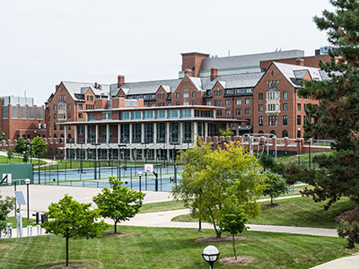
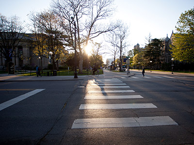
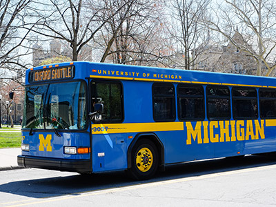
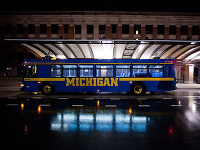
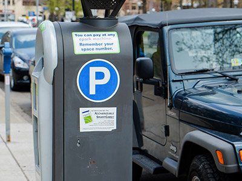
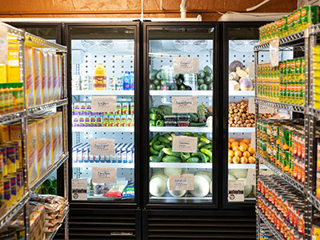
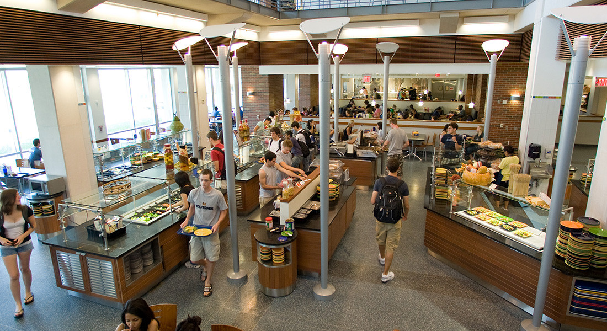

Discover what makes Ann Arbor the perfect place to live, learn, and grow as a UMSI student.
Ann Arbor offers a vibrant mix of culture, community, and resources to enhance your student experience. From world-class dining and entertainment to peaceful parks and cutting-edge technology hubs, this city has something for everyone.
Housing
Whether you're looking for a cozy apartment near campus or a quiet retreat in the suburbs, Ann Arbor has a variety of housing options to suit your needs. Explore the links below to find your perfect home away from home.

U-M On-Campus Housing
U-M students looking for on-campus housing can use this resource to obtain information on residence halls, floor plans, amenities, pricing and more.
Learn more about U-M's On-Campus HousingU-M On-Campus Housing - Living-Learning Programs
Living-Learning Programs are on-campus community housing options that allow students to connect through shared interests. Options include spaces within a hall or an entire floor.
Learn more about U-M's Living-Learning Programs
U-M's Beyond the Diag - Off-Campus Housing
Beyond the Diag is a housing resource located within the Dean of Students Office. Students can obtain information on off-campus housing, vacancy and roommate listings.
Learn more about U-M's Off-Campus HousingTransportation
Getting around Ann Arbor is easy with a variety of transportation options available to students. From free bus rides to bike-sharing programs, you'll find everything you need to explore the city and beyond.

U-M Bus (The Magic Bus)
The Magic Bus is a free on-campus bus service available to U-M community members. Visit the website to view routes and real-time bus locations.
Visit the U-M Bus (The Magic Bus Website)
U-M After-Hours Transportation
U-M offers various free or low-cost options for after-hours transportation. These services operate later than The Magic Bus and TheRide.
Learn more about U-M After-Hours Transportation
U-M Logistics, Transportation & Parking
Logistics, Transportation & Parking is a vital resource for U-M transit. Students can obtain information on bus services, daily rentals, parking, after-hours operations and more.
Learn more about U-M Logistics, Transportation & ParkingFood
Ann Arbor is a foodie's paradise, with a diverse array of restaurants, cafes, and markets to satisfy every craving. Whether you're in the mood for a gourmet meal or a quick snack, you'll find plenty of options to choose from.
Food Finder
Food Finder provides information on nearby food pantries, grocery distributors, free meal options and more. Search by zip code using the online website or application for your smartphone. Each program has its own eligibility requirements and resources.
Learn more about Food Finder
Maize & Blue Cupboard
The Maize & Blue Cupboard provides various food insecurity resources, including: educational opportunities, leadership development and support. U-M community members must present their MCard to participate.
Learn more about the Maize & Blue Cupboard
Michigan Dining
From international cuisine to vegetarian entrées to gourmet pizzas, dining at Michigan is all about options. With many dining halls, residential cafés and meal plans to choose from, there's always a tasty way to satisfy your craving.
Learn more about Michigan Dining